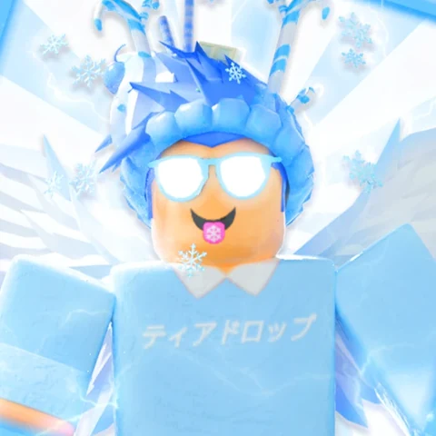

A Starfall Inc. original
Live on Roblox
Pet Dimensions
Create an army of the best pets — they will help you take over the world!
500+ pets to collect
Play on RobloxIndependent Roblox game studio
Starfall Inc. is a one-developer Roblox studio by BKProsYT. Its game, Pet Dimensions, is live now — build an army of the best pets and take over the world.
Pet Dimensions 500+ pets to collect Build your army Take over the world
The feature presentation: step through the portal into a pet-collecting adventure on Roblox.
Live on Roblox
Create an army of the best pets — they will help you take over the world!
500+ pets to collect
Play on Roblox
Starfall Inc. is a solo studio. There is no big team behind it — just one developer, BKProsYT, making games for Roblox.
Pet Dimensions is the studio’s game on Roblox right now. Follow the creator on YouTube, and meet the players on Discord.
Made with love
by Starfall.
From Pet Dimensions on Roblox
Two places to find Starfall: the creator’s YouTube channel and the Pet Dimensions Discord server.
For business enquiries, collaborations or just saying hello:
bkprosytbusiness@gmail.com